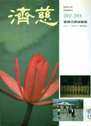
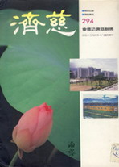

圣乐创作回忆录
冯冯
我的拙作“佛教现代新古典圣乐交响曲与大合唱”专辑，终于录音制作完成了，让我终于可以达成我的多年梦想与心愿，为佛教音乐添增现代化的新古典主义西方形式的管弦交响乐及庞大阵容的百余人大合唱，希望有助于佛教向国际弘扬，也作为对传统佛教梵珼音乐的一种辅助。
我创作的这一批新圣乐，已经全部奉献给佛教慈济基金会证严上人，由慈济发行，全部义卖，为慈济医院筹募病床设备基金以购买医疗病床与设备来供应贫寒的病人，亦将以一部份义卖所得来支持慈济医学院的建校基金。
我不知道此项义卖能够筹款多少，或者不会很多，但是我希望读者们慷慨解囊，尽力来支持“慈济”，我的作曲也许未能符合您的期望那么好，那也要请您包涵，多多义购，我的拙作微不足道，并不值钱，只是抛砖引玉，请求您鼎力支持“慈济”照顾贫病和建立医学院培养医护人才，将来扩大慈济对贫病老弱的服务。我捐出拙作义卖，是因为我再已无物可捐出，唯有把作品奉献作为慈济筹款之用。我的拙作义卖，只是很卑微的一点点微忱，而您的大慈大悲的爱心和慷慨义购，才是真正弥足珍贵的无比温暖与伟大；我恭敬虔诚地请求您，发挥您的伟大的慈悲爱心，借着义购我的拙作圣乐这样的微物，而把您的温暖和爱心布施给人间，像佛陀与观世音菩萨一样！
佛陀说六度万行，以布施为先，我们学佛，我们修行，当以布施救苦救难救助病苦恤孤济贫为重！我们这样做，就种下了无限善因，在人间每一个疾苦的人心中种下了善缘，把佛心播种在人心、佛学建立在人心！善缘会像波浪般传递，传遍人间，慈悲心与爱心会不断地传递发扬，更多的人向善行善，使人间渐渐成为善良清净的佛土，读者您一定比我更彻底明了，所以您会参加支持慈济，已经那么发心、那么积极、那么慷慨、而且会继续地慈悲布施！
耶稣说：“施与的人比受者更有福！”这句金句，与佛陀说六度万行以布施为先，是相近相通的真理。佛又说：“善有善报，恶有恶报。”这句圣言明白地说明了宇宙间的因果律，行善必会得到善的福报，作恶必有恶的果报，所以耶稣基督也说：“施比受有福！”
行善布施是有功德的，尤其是“施不望报”的善举，所种的善因更大，未来的福报也更大。就算是“望报”而“行善”，也总比不行善好，因为善行布施，一定会种下善因，必有善报，福报大小，则自然随布施的善心大小而伸缩！一念之善，就会得同等福报；望报而行善，即是善念不诚不正，发出的善力较弱，回报自然也弱了。这是像打回力球一样，发球力大，回力反弹也大，发力小，回力就小。至于俗语所云“有心行善，虽善不赏；无心为恶，虽恶不罚”，那是不太合乎宇宙因果律的腐迂之论；很简单的一件例子：假如有人无意驾车撞死了人，法律是否可允许完全不惩罚呢？是否可无罪释放呢？当然不能！或者可以减轻判刑，但断不能无罪释放。反过来说，行善也不能说是望报的有心行善就全无功德！行善，不论是否“有心”，是都有功德的，只是视愿力的大小而定功德福报大小而已，您的爱心越大，愿力越大，功德，善报就更大！
行善，心不望报，无所求，当然是善心爱心愿力最大，功德最大，福报也最多；倘若善心有所求或望报，也还是会有功德的，会有福报的，只是不及“不望报”“无所求”的福报大！若是有人为了祈求观音菩萨加持其病体复原出入平安，因而许下善愿布施行善，或者有人为祈求菩萨保佑他生意兴隆，因而许下善愿布施济助贫病……也是可以获得善报的，虽然不及那些不为自己求福址福报的布施者所得的善报福报那么大！
我们也必须！知道：“勿以善小而不为，勿以恶小而为之！”爱心虽有大小，善行虽亦有大善小善之别，却不能因为善行太微不足道而不行善，也不可因为自己力量卑微而不敢行善〈或是怕被讪笑而不屑为之〉。恶行则无论是多么微不足道，也不可为之，因为无论多小的恶行也会种下恶因必得恶果恶报！我自己常常记住这两句话，所以明知我捐献拙作圣乐义卖，只不过是很卑微的奉献，谈不到是布施，我也还是决心要捐出来，就如同我会捐献念珠及捐献佛陀舍利与佛骨璎珞给“慈济”义卖一样，我个人并没有捐献出什么巨额的金钱，只是捐出一点点卑微的心血，也还不敢自比于“贫妇一灯”，不过我还是捐献了，是慷你们之慨！真正布施真正有大善功德的，是你们付出爱心与血汗挣来的金钱来义购我这些卑微的作品去支持慈济医院与医护两校；功德是你们的！善因是你们种下的，善福善报也都各别回向给你们，无论您是佛教徒或不是，那都没有分别，只要您行善，就会自然地获得善果福报，因为这是宇宙因果律，因为这是您自己爱心善心所发出的愿力，从宇宙深处回向了回来给您！就像任何发射出去的音波电波光波磁波，必然会从宇宙的遥远深处反射回来原处，只是迟早问题。
现在说到我创作佛教现代化新古典主义交响乐及大合唱圣乐的过程，那可真是历尽艰难阻碍与辛酸！提起来，都不知应从何说起，感觉到好比“西游记”中的唐僧西行取经，历尽千山万水魔障危难千千万万那么艰辛痛苦！也许我将来会找时间来详细写一本小书来忆述我怎样从“目不识丁”般的一个“乐盲”又没有受过音乐教育，怎样苦学自修，经过多少打击，才终于达成我创作及捐献圣乐的心愿，但是现时我只能简短地向您报告。
我是一个失学的人，连中学教育都没有机会完成，从小至今，一直都在贫穷线上挣扎，为了谋生及奉养年迈的慈母，我出卖劳力，也作笔耕，糊口虽无困难，却无余力去进入学府求学，也没有任何学历证件可以据以报名进学校，我曾经努力地试叩过五六所大学之门，却都被摒之门外，我唯有 自己自修，起先自学外文，后来自学写作。毫无学历与毫无人事背景，写了一部长篇小说“微曦”而幸被选为首届“十大杰出青年”之一及获得嘉新文化基金会文学奖金，而又意想不到地被石美瑜校长(注)破例聘请为东吴大学英文系二年级的代课教授，石校长曾经向教育厅申请把我升为正式教授，不幸因为我毫无学历而被教厅批驳了下来，同样地，我也不能成为台大的法文讲师！石美瑜校长早已不在，二十多年来，我仍然感激他那样提拔我这个当时只有十八岁的失学少年！我仍记得，东吴外双溪校址，讲堂内外挤满了学生来听我这“猴子”代课教授讲课，学生都比我年龄大得多，我不无惶恐，一个自修的十八岁少年居然斗胆应聘去对大学二年级英文系学生讲英国文学，岂不荒谬？石美瑜校长亲自坐镇，与外文系主任为我助阵保驾，石校长的温煦微笑，使我鼓起勇气讲课下去，那情景，宛在昨日。可是，二十五个年头已过去了，石校长已经物化，再也见不到这位毅然提拔我这陌生失学少年的长者！石校长曾经是起草日本投降给中国的条约书的国际知名的大律师，这是人所周知的，不过恐怕很少人知道他曾经提拔一个毫无学历证件的少年去做大学教授，他真是可说不让蔡元培先生专美于前了。〈已故蔡元培是北京大学校长，曾提拔只有小学学历的沈从文做文学教授。〉
网注：冯冯后来在1997年发表《一个乐盲──“在莫斯科芭蕾舞台上”》，提及：“我受东吴大学石超庸博士校长赞赏推荐任教该校，终应缺乏学历证件而被教厅批驳……。” 及2003年《雾航》回忆录一书，亦更正为 石超庸校长。
我并没有什么学问，只是拼命苦读用功，夜间常常自修到天快亮，只睡一点点时间，又得赶起床去上班，去东吴授课。其实那时候我的兴趣老早就已经是音乐多于文学，可是那有机会去学音乐呢？那时一身兼三职：在联合报做王惕吾社长的英文秘书，在东吴教书，还得兼为皇冠出版社写稿，忙都忙不过来了。
十九岁，做大学教授的日子结束了，因为教育部不准，我被打回原形，含着眼泪出国，来到加拿大，一心以为可以进入大学音乐系去学作曲，也因为没有学历证件而被拒于校门之外！这也是意料之中，谁叫我贫穷无力念完中学？没有学历证件，到处碰壁！我认了命，只好去出卖劳力，做打杂、打扫、跑堂、洗碗，换取生活和养活老母亲！进大学学音乐的美梦是不敢再做了，还是重拾秃笔，重新再做小说作家作为副业吧！
可是我并未放弃对古典音乐的兴趣，我除了工作之外，空闲时间都在听电台广播的古典音乐──用耳朵来学习音乐自修乐理，一年间，居然也写了一个“第一交响曲”，厚着脸皮拿去求见温哥华交响乐团的指挥戴维斯先生〈现在是英国伦敦交响乐团的指挥了〉，满怀希望他至少指点一下，倒不敢奢望他会叫乐团演奏，谁知他连一行谱子也没看我的，就立即说：“孩子，你完全没有天才，你也毫无希望！”
“微曦”一书的轰动，使台湾的人太过份宠我了，虽然我并未被宠坏变成自满，到底也有了若干自尊心。这一点点自尊自信，却都被那位大指挥家两句话全部击溃了。那一夜，我踏着大雪，每一步都膝陷在雪中，狂风与雪绒吹刮着我的脸，我一路流泪，哭泣着，若不是念着母亲在家倚门而望，我说不定会投身到那铁桥下的浮冰黑色海水去自杀了。
可是我仍需奉养母亲，我不能让她孤苦伶仃流落在异国无以维生，我必须咬牙忍受我的挫败痛苦！我许下弘愿：我必须有一天学成作曲，我要写出佛教的新时代的圣乐；我要使它传播于世界，帮助佛教向世界弘教！“观世音菩萨啊！”我祈求：“请给我勇气，活下去，奋斗下去！让我为佛教而努力，为佛教作曲！”
那也不是我第一次受到音乐界名人的打击！却是最痛苦的一次！那一棍打得我二十多年不敢抬头，也不敢再提作曲！我是已经被大指挥肯定批评没有天才没有希望的人，我自己也知道那是他的诚实的批评。他大可以说些“你很有天才，只不过……”之类的话来敷衍我，我至今仍然感谢他，因为他诚实、不虚伪，更感谢的是他的打击使我更加下了决心要用功自修作曲使我更加要发愤图强！假如他当时虚伪地称赞我有天才，我可能就不肯下苦功了。所以，他给我的痛苦虽然很重，我并不怀恨他，相反地，我反而感谢他！
当然我也感谢戴粹伦教授。感谢他当年拒绝我进入师范大学大礼堂去旁听他指挥台湾省交响乐团排练。我那时穷得没钱买票去听他的音乐会，却又想学音乐，满以为以小孩子身份可以进去旁听，见习一下各种乐器的声音。我十五岁之时，曾经冒雨躲在戴先生的泰顺街寓所窗下听他练小提琴，自然也没获准进门，十七岁被他拒绝旁听交响乐团，我说起来似乎有些酸酸的，其实毋宁说是感谢他。没有他的拒绝，也许我不会去自修用功！这是我的个性，人家越不肯教我，我越要自己去学！
读者们必有人记得曾经在我的文章内多次提到这两件痛苦的往事，怎么我又再提起了呢？因为这是我“卧心尝胆”的那些苦“胆”，我必须时常记住这些痛苦来激发我的自修苦学。我今天也仍未成为一个有地位的作曲家，纵然做了圣乐，也仍不足以向那两位大指挥家雪耻炫耀，我也没有那种动机，不过，我想让世人知道。勤能补拙！我没有天才，但是我肯下苦功自修，毫无天才也可以慢慢写出交响曲圣乐来，凭着不懈的努力，这么愚笨的我，在阔别了音乐作曲初试的二十年之后，重新重头再自修乐理与作曲，从电视上的音乐会和广播的古典音乐学习，四十岁才重新开始，怎能比那些从小就有钢琴或提琴老师，或是从青年时代就进入音乐学院的人？不过，我深信西谚“人生四十才开始”这句话，我决定要以苦学勤修来弥补自己的笨拙与缺乏天才！
有天才无天才，有希望无希望，那都不再是障碍了，我矢誓一定要达成创作现代化的圣乐，哪怕是每天只能写一个音符，也要写成它！我没有学过音乐，没有学过弹钢琴，不懂乐理，不会读五线谱，那又有什么关系？我可以慢慢地写！我要把心中的宗教感情与感动写下来！我暂且抛开乐理的威胁，也不去企图在钢琴上作曲，更不去管五线谱；我觉得，能有正式音乐教育当然是最好，但是缺乏正式音乐教育培养，并不就是不可以唱歌不可以作曲。请听听山地人的山歌，也请听听客家人的山歌吧！多么美！多么有情感！那些采茶姑娘何曾学过和声学与对位法？何曾会弹钢琴？她们生长在山地农村，恐怕连钢琴都没见过，她们哪懂得什么五线谱六线谱？可是山地人与客家人的男子女子都能唱出美丽的山歌！没有受过正式音乐教育的他们，反而能够不受束缚地自由地唱出纯朴的歌声！这件事实使我了解到，是先有音乐，后有乐理的，是先有情感，后有音乐的，先有情感流露的天然歌声，后有乐器的伴奏。是的，我要摆脱可怖的乐理理论与教条的陷阱！我要先从真挚的感情流露来作曲！我不要被乐理规则所扼杀心中的情感！我可以先写出心声来，然后才去运用乐理予以整理予以改进！
于是我重新开始！我把心中的宗教情感的歌声，用简谱写下来。不再像十九岁那时一开头就企图用乐理教条来写五线总谱──写成了徒有形式毫无感情的作品，难怪大指挥家说我毫无希望毫无天才──我依稀记得小学时代唱歌的简谱，不过，并不很确知它的拍子之类怎样写法，幸而我仍记得１２３４５６７ｉ，我是把情感先流露出来，写成１２３４数字，然后整理它的拍子，认为已经成了一首歌的旋律，然后填上歌词，自己哼哼唱唱、修修改改，直到觉得还很顺，才把旋律翻译成五线谱上的音符，这是我这个笨拙而又缺乏天才的人的作曲法！
起先，我连五线谱都买不到，是一家旧书店的英国人老板送给我的几页不知谁遗弃在旧书堆中的小型五线谱，显然是小学生用的那一种，已经又残又黄了，我却如获至宝，舍不得用。我写的佛教歌曲，第一首，是“慈济进行曲”。就是先把旋律用简谱写下来，然后填词、然后翻译成五线谱音符，并且加上鼓号乐队的伴奏──我那时正在开始为慈济医院进行天眼服务，每天须回覆很多求诊者的来信；我那时还没正式与慈济连络接触，还是请天华出版公司代为转达的。通常是读者先对慈济医院作了捐献四千元新台币或一百美元，我看到天华转来慈济收据，我才为之服务。这是我没有钱可捐，才想出来的笨方法为慈济医院筹款；没想到反应那么热烈，有好几百人来信，服务期限已结束了很久，这么多年，也仍有人来信要求服务。而我亦料想不到竟以“天眼”知名，这一个虚名把我累得很惨！多年以来，每况愈下，我每天日夜都被来信与电话和不速之客打扰，以致寝食俱废！我变成了“天眼”虚名的奴隶！使我几乎完全失去了自由的作息和创作的时间。
直到现在，我仍然是受困于这困扰之中，无从逃避，也无法减轻。半夜三更，会有人打电话来问病吉凶，在睡梦中也被人打门叫醒求救，没有一顿饭是可以安安稳稳吃完的，才扒了两口饭，就有人打电话来，要求看病，要求会面，要求寻找失踪的人口或猫狗或汽车钥匙。写曲不到三句，就有人打电话来诉苦，要求助她调解夫妻不和，或是寻找先生与外遇女人在何处幽会……很少是问佛法的，很少很少！打扰的人，都是认为“天眼”是应该服务一切的，包括从时遇休咎以至男女问题的种种世俗欲望问题都得服务；很少人尊重我的私人时间，差不多的来人都不知道我原是一个作家。他们都当我是在天桥底下摆测字摊的什么“半仙”，不少人从香港顺道来找我，只是满足好奇心或是来考一考我的本事，也有人从马来西亚前来上门辱骂我一顿，或者要求我传授“天眼”……种种怪招，真是令我应付不了；怎么样苦口婆心劝他们学习正信佛法，都没有什么成效！我总算是明白了，为什么佛陀说：“正信不尚神通！”（杂阿含经）。果然神通是不能露脸的，露了一手，就会招惹来无限的麻烦与痛苦！我已经身受其苦
，受得够了！
我写“慈济进行曲”的动机，是觉得佛教需要有一些活泼的进行曲，不能老是只听那沉沉闷闷的古老唱念与节拍，叫人昏昏欲睡。我想写一些活泼有朝气的进行曲，可以让小学生或中学生的鼓号乐队唱奏，一边行军，一边奏，或者可以供给慈济的会员们列队外出募捐之时，作为开路的军乐。我对军乐一向有与趣，最熟听苏西氏（Ｓｏｕｓｉ）的军乐作品，所以我写慈济进行曲并不感到困难。后来又随之写了“佛教青年进行曲”，是同一类型的军乐进行曲作品。不过，我写进行曲的尝试到此为止。以后就没有再写了，原因很多，一是这两曲的遭遇都欠佳！后者根本无人肯唱，而慈济进行曲，也没有引起很多人的兴趣，甚至于在后来虽然录了音，也被发行的出版社删除了不予发行。显然是认为不登大雅之堂吧？后来我把录音带送给了慈济基金会。不过，停止写进行曲的主要原因并不在此，而是我更喜欢写抒情的歌曲，我的个性是多面善变的，我有狂热活泼的一面，也有善感的另一面。这一面个性促使我开始写作抒情的歌曲旋律。
我写的第一首抒情歌曲，是根据中国从古流传下来的民歌“水仙花”旋律而改编的“美丽的莲花”，这是我首次尝试用男声女声混声四部大合唱，加上竖琴伴奏。这首歌发行之后，一直很受欢迎。不过，成功的不是我的作曲，恐怕仍是因为它的原来的旋律很优美；我只是予以改编，加上和声四部和竖琴伴奏，予以美化而已。但是此曲也不能算是全部创作，也没有真正表现我对佛教的内心感情。所以，我放弃了继续改编古典或民歌，我要自己创新了。
在无数的电话来信及登门者的打扰之中，我被迫只有深夜作曲，往往是在子夜一时至三时或拂晓时分，比较清静一点，较少干扰。一般人不明白作家与作曲家是很怕被电话与不速之客打扰的。我写文章与作曲，均需要极度专心，全神贯注，不能分心。电话铃一响，加上对方提出种种要求，那就把我一切的灵感都打散了！我不是天才，我只有苦干专注才作得出文章与音乐。一被打断了灵感与分了心，我就很难恢复工作如常。往往一个电话或几位不速之客来串门子，就会把我的一天工作都破坏殆尽了。无论怎样努力去重拾笔杆，也都写不出什么东西来，所以我很不欢迎访客，没有预先约定就随时来临。中国人一般是不很尊重别人的工作的，也不肯预先函电约定，他们喜欢什么时间来就什么时间来，而有些人又往往打电话来说：“我是香港来的，只停留一天，你务必拨出时间来会见我！”以此要胁者，几乎天天都有。这些也是我作曲的魔难！
我现在已变成被自己的虚名所累，害得我无法写作无法作曲。我常常难过得很，常常被人逼得流泪！不接见么？不近人情；接见么，川流不息的好奇者与求助者，接踵而至，害得我接应不暇，害得我放弃了写作与作曲，烦到我精神分裂。一个平平凡凡的人，自己的生活与工作都未能安排得妥善，还得日夜去接见好奇的人，解答种种繁琐的问题：吉凶啦、风水啦、生意好不好？婚姻、对象、性生活问题、生育问题、男女爱情问题、夫妻吵架、父子不和、母女冲突、亲人成仇、失物失钱的下落、人口走失、投资问题、移民问题、打官司、健康问题、家宅问题、家庭纠纷、交通意外、中东战争、世局问题、怎样打坐才是妙法？如何成佛？如何参禅？怎样修法？孩子不用功读书怎么办？不听话怎么办？死了的亲人现在何处？投生何方？为什么人们都不自己去找正信呢？
就算真是半仙，也给烦死啦！何况只是个毫无天才的凡夫俗子？只有我自己知道我写每一句音乐都得经历过多少干扰，只有我自己知道，没有天才作曲是多么艰难，又怎么经不起外来的种种打扰！也有些人说：“我不多扰你，只问几个问题就走，让你再继续写作！”他们不知道这一个毫无天才的人完全受不得打扰，必须绝对安静专心全神贯注一口气工作下去，绝不得中断，一被打断灵感，那就一整天都恢复不回来！
莫札特随时随地可以写下曲谱，舒伯特可以在餐馆写出名歌，萧邦可以在咖啡的餐纸上写下钢琴名作，但是，没有天才的冯冯不能！人们不知道冯冯在被打扰之后写不出曲子，而且会痛苦得饮泣流泪！人们当作看猴子般来看我，他们满足了好奇心，我勉强接见。陪笑脸，可知我送客走了之后，回到书房，坐在书桌前面发呆流泪？有时候我在想：街上的妓女也还有拒绝接客的自由，而我却没有自由！我被虚名所害惨了！为了不愿使人家失望，我不得不接见，却牺牲了我自己的创作时间与精神体力！人家不知道，还在骂我架子大哪！我有什么架子？我只是想闭门谢客来自修和作曲而已！
在百般困难阻力之下，我仍然勉力写成了“晚祷曲”“谁来拭干我的悲泪”“地藏菩萨摩诃萨”这三首抒情祈祷歌曲。并且为它们配上小型管弦乐伴奏，这是我的新尝试，对于管弦乐配器，我一直没有学到什么，只是从中英文的乐理书籍去学习而已，根本毫无实际的乐器接触。写好之后，才在老爷钢琴上，用一只手指去试音。我不会弹钢琴，也不会看谱子，只会看自己写的音符。我也只能一只手指试一试罢了。在这样情形之下，居然写成了几首小型管弦乐曲与四部和声合唱，艰辛可知！
不过，有时候会发生奇怪的事！多半是在夜阑人静之时，忽然我会闭上眼睛，两手十指如飞般在钢琴键上弹奏，我的手好像并不属于我，好像是别人的手，竟然会那么轻灵活泼与熟练，俨然是银幕上的钢琴家一般，奏出的音乐美丽极了，从来没听过，而且不似世上的音乐，都有一点天外飘渺的成份！往往一奏就是一两小时，欲罢不能，忽然就停止！我不明白这些是怎么一回事，我知道那不是我自己，我知道我作不出来那么美丽困难的曲，也没有那样的技巧。我多次企图用录音机把音乐录下来，可是从来没有成功过一次！不是忘了开机，就是忘了插电，不然就是磁带莫名其妙地失效而致录不到音，再吗就是纠缠成一团！经过多次的失败，我也不打算再试录了。
每次我从那恍惚的状态清醒过来以后，我会得坐在琴前发呆好半天，难以置信我曾经弹奏那么复杂困难的天外音乐。我企图写下来，却都记不住、抓不到，也缺乏那么高的作曲技巧！那是什么音乐呢？钢琴键盘上，十二个调子一百四十四个键子全部飞跃跳动，从未听过的奇怪陌生和声与对位！变幻莫测的许多旋律，神秘、诡奇、崇高、庄严、伟大、美丽，没有什么词汇足以形容它。我曾经安排友人埋伏在琴室外面等待暗中录音，可是种种安排都归于失败！有时候友人在外面听到音乐，就暗中录音，我在琴室内忽然就从恍惚中醒过来，全部音乐消失，我依然是我自己，弹不出任何音乐来！这些绝非虚言或神话，的确有友人偶然听到过几句这样的音乐片段，都说令他们感觉到好像是听到了宇宙深处什么天外又天的清丽音乐，莫非这是佛境的音乐么？他们问我，我也无法奉告。我多么渴望再多听几次，多渴望把它记住，写下来，可是并非常能听到，也不是我这么笨拙的笔所可抓得住的，我仍然在期待着。妙音菩萨！我感悟地祈念着这位菩萨！那一定是妙音菩萨假借我的手来把音乐传授给我。可惜我是那么笨拙，一些也学不到！
“晚祷曲”等作品，能以简谱与五线谱两种形式先在香港“内明”月刊发表，感谢当时的主编沈九成老居士的特别照顾。沈老居士是太虚大师最后的一个随待居士弟子，佛学造诣很深，而且眼光独到。假使不是沈老提拔我，首先在“内明”刊用我的“夜半钟声”等散文，日后就没有过这集子。我的科学与佛学印证的第一篇论文，最初是投寄给美国“万佛城”月刊的，那篇“西方科学走向东方佛学空观”寄给该刊一年多，也没获得发表。函询多次也毫无回音，我在失望之余，只好把副本投寄香港“内明”月刊。本来亦不存什么奢望，怎料沈老居士来函大加赞赏，许为奇才，并将拙文置于“内明”月刊的篇首，以最显著地位予以推介。后来的二十篇论文也受到沈老同样的优待，科学印证佛理一书，得以奠基问世，首先要感谢沈老居士。后来我将稿交请天华出版公司出集，征求沈老意见，他也欣然同意，并不据为内明版权所有。沈老的胸襟，真是令人缅怀不置！
沈老也是头一个刊出我的佛曲谱子的人，刊制曲谱成本较高，版面也不容易安排，沈老当年力排众议，率先刊出拙作，他来信说他完全不懂音乐，不过他支持我写作佛曲。几年以后，沈老往生了，他是出家几个月之后往生的，享年才七十岁，法号融如法师。已往文字之交十年之中，他曾多次征询我的意见他是否可以出家？我一直都反对他披剃为僧，因为我知道他必以出家之相入灭，我是自私的，我老想尽力挽留他留驻人间，最后，他自知因缘已至，就不顾我的反对而出家，旋即入灭！
没有沈老居士率先印刊我的曲谱，就不会有日后的因缘录音。大约一年之后，台湾桃园市的金兰食品公司副董事长范文正老先生，因响应我的天眼服务而捐款给慈济医院，也因此而开始与我通信。他向有膝痛之疾，我给予一些建议，渐渐康复，可以步行登山散步。他的第二女公子郑医生太太，看到我的“晚祷曲”登在内明月刊上，她是喜爱音乐的人，她觉得曲子很不错，就拿去请龙潭国校的一位老师林保奎先生试唱，由林太太钢琴伴奏。郑太太把录音带携着，趁着陪同范老伯赴阿拉斯加旅游之便来访我，我招待午餐，饭后郑太太送给我这一件珍贵的礼物──“晚祷曲”初唱的音带！
那是第一次听到有人唱我的作品，我感动得流泪！我永远都在感谢范老伯父女。他们即席就答应支持我将“晚祷曲”等曲子制作成小型管弦乐伴奏四部人声合唱。当时我与范老伯是讲明音带制成之后义卖，全部捐给慈济医院建院基金的。
郑太太返台湾之后，邀请林保奎先生及他的师友合唱，并聘请小型乐队伴奏，范文正老伯独力出资二十万元台币做制作经费，大约是一年之后制成音带，寄来给我。一共有下列各曲：“慈济进行曲”、“美丽的莲花”、“观音菩萨圣号”、“晚祷曲”、“谁来拭干我的悲泪”、“地藏菩萨摩诃萨”，林保奎先生的音质宏亮优美，是天生的一位天才男中音与高音，他唱得好极了！合唱团也很好，我非常满意。美中不足的是，我的伴奏配器太单薄，不够气派；而且，他们找不到人弹奏竖琴，只好请人用电子风琴模拟竖琴，声音嫌太生硬了一点。不过无论如何，这已经是难能可贵的成绩了，我已经喜出望外。一个从未受过音乐教育的外行汉，全靠自修写成的歌曲，居然有人出钱出力支持录音，这是多么幸运的事啊！
我在录音带前后加插了我个人对佛法的浅见讲话，目的是藉着音乐弘扬佛理，并非要卖弄自己的声音。为这些曲子的音带，我遍寻台北的市场，都找不到人肯发行。我与天华出版公司关系深久，只好请求天华发行，天华是一个出版佛学书籍的公司，态度严谨，多年来我的作品得蒙天华公司出版发行，对我礼遇有加，他们原无出版发行音带的经验与预算，却也破例发行我的那初批圣乐作品音带。他们印制彩色封面，请专家改善音带及生产，种种繁琐工作，都是天华公司的同仁辛苦担任，至今我仍感铭五中！
不过，不幸地由于彼此联系不足，我又忙于写作，以致天华在音带中漏列了“慈济进行曲”，后来天华听从我议，把该曲母带送给了“慈济”。我原意是希望“慈济”予以单独发行义卖，不知为何，慈济并未这样做，只是将它合并到“慈济歌选”音带之内，并未收到我预期的义卖效果。慈济也请国乐队唱奏了此曲，成绩很好。不过，听来此曲似乎不太适合国乐演奏，因为它是军乐进行曲。
至于其他各曲的发行，由于我疏忽而未曾密切联络“天华”，未能使他们明了我要为“慈济”义卖的原意。等到一切印制好发售了，我才发现并无印“为慈济义卖”的字样！那时已来不及更改，只好将错就错，一路发行下去！没有做到义卖，这完全是我个人的疏忽所致，我负全部责任。绝不是外传所言“天华公司不肯为慈济义卖”那一回事，天华公司曾经义务地刊出我为慈济医院作天眼服务、天华同仁忙了一两年转寄请求服务的信件，又把我服务所得的六十多万元新台币送交慈济医院建院基金；还为我登过数次为慈济义卖我的作品“空虚的云”“科学佛理”等书，足证天华一向支持我热心支持慈济，功不唐捐。他们怎会不肯为我义卖音带给慈济呢？一切的错误，都是由于我疏忽，实非天华的责任！
首批圣乐的尴尬事情，尚不只上述的一件，还有闹出“三胞案”的麻烦！
佛教圈人士，由于历代以来习惯了翻印经书逢人赠送，就更加认为有权利可以随便翻印任何人的作品。他们认为这是弘法流通经书，是有功德的，根本完全没想到过未取得著作人与版权所有人的同意。这些热心的佛教人士擅自翻印流通别人的作品，目的并不是牟利，也不为名，他们是毫无自私心理的；他们的动机是纯正的，他们是善良的，在他们而言，这并不算是盗印，这只是利众的奉献。可是从法律观点来看，纵然是善意的非牟利的盗印，也仍然是盗窃之罪！从佛教戒律来看，这也是犯了“偷盗戒”！
除了盗印经书与文章之外，现在佛教圈更流行擅自翻印盗印录音带录影带，有些动机善良的人是盗印了赠送大众以作弘扬佛法，有些佛教人士或出版机构却盗印了拿去出售牟利！
在这“三胞案”之中，两处出品是免费赠送，我自己的天华版音带却是定价出售。在受到两处大赠送的竞争之下，我的天华版怎能有销路？就有不少人写信来大骂我：“为什么你做佛教音乐也要卖钱？人家都是免费赠送的呀！”也总算还有明理的人去购买天华版。事实上，三种版本各有特色，菩提园版的乐队较好，初版较清，天华版则比较接近我作曲的原意，可惜乐队太小！天华版在天华月刊已刊出最大的广告，可是并未在外界报纸刊登宣传；因此外界很少人知道我的作品发行，而且天华公司从来未发行过音带，显然也并无音带发行网的联络，天华版的拙作，销路也就只靠一些熟知的读者们支持而已。
这一切的麻烦，毋宁说是完全是我自己的错！是我太心急寻求发表机会，是我不善于处理，造成了三胞案，引起了许多热心人士的互相磨擦争执，引起天华公司的亏损，而我也达不成以圣乐音带义卖为慈济筹款。我一直心中难过！但愿与此有关的人士都能原谅我的笨拙！也请接受我的致谢与歉意！
我实在不善于处理发行业务，书呆子就是书呆子！我吞下这一切的失败苦恼，决定不再去管它。我最关心的事，已不是发行的问题，而是怎样去创作更好的圣乐，我也受到不少听众的赞美，说我的音乐如何感人，这些鼓励却并未宠坏我使我得意忘形！无论我自己怎样被自己的作品所感动，我也还没忘记我是个音乐的门外汉，我写的音乐仍是很不成熟，仍是很幼稚，很多缺点，我必须再予以改善，我必须重新再努力学习。我从听觉中找出我的音乐的缺点，举例一二说：节奏太缓慢，过门的音节太长时间，配乐太单薄，太缺少对位法的变化……等等。我在写作之时是不觉察的，必须听到以后才发现。我必须一一予以改进，于是我着手修改曲谱。
林宽教授从洛杉矶来访我，是一件使我惊喜诧异的事。林宽先生是有名的声乐家男高音，在一九五○、六○、七○年代，林宽先生在乐坛上的地位声誉如日中天，被称为“中国首席男高音”。我少年时代，买不起票入场去听他的独唱会，只能徘徊在中山堂门外，从门缝偷听一点点。十多岁的小男孩，得不到机会钻入崇拜听众之群去请求他签名，孤零零地落后在人丛后面遥遥仰望他；那情景，如在昨日！谁料到林宽先生突然会从洛杉矶打长途电话来给我，说是慕名要来见我！这真是令我受宠若惊极了！
林宽教授真的从洛杉矶专程飞来温哥华看我，他是一位基督教徒，他很仁慈地说他被我的“晚祷曲”录音所感动，他说他并不觉得有宗教上的分别心；因为美的音乐就是美的音乐，他说此曲很美很富感情。他问我肯不肯把谱子交给他带回去给他的“牧星合唱团”演唱？一个在音乐上藉藉无名的作曲者，忽然被一位国际知名的声乐家屈驾来访又征询可否演唱其作品，读者您必定可以想像到我当时的感动情形吧？我当时热泪几乎夺眶而出，我把我修正的“晚祷曲”呈给林宽教授；我的两手都在发抖啊！
林宽教授指挥牧星合唱团，在一九八八年五月公演“晚祷曲”于洛城，节目单上排在很重要的地位，仅次于基督教圣诗名作。
那一次音乐会有很多世界名曲和中国作曲家的名作。林宽教授显然是有意把我的作品列入世界名作之林，这是他栽培一个晚辈的苦心，我不知应该怎样来致谢这位素昧平生的伟大声乐家！林先生后来电话告知，那一场演出，我的作品受听众欢呼鼓掌最多！当晚在场的听众，有几位女士打电话来告诉我，“晚祷曲”感动得很多人流泪，抢尽了全部节目的光彩，全场高呼再唱！
我收到林宽先生寄来的录音带，听来我的修改是已经收到较前为佳的效果，他们唱得好极了，那些如潮掌声与喝彩，使我又禁不住落泪！我感谢林宽先生的栽培与听众的鼓励，他们对于我的鼓舞真是太大了！
受到鼓舞的我，更加努力于深夜作曲下去！忘了世俗的烦恼，忘了种种挫折！我觉得我还有更多更深感受的圣乐要写出来，“晚祷曲”只是一个幼稚的起步而已。我决定要写全制的管弦交响乐与百人以上的大合唱！佛教音乐为什么不可以采用现代化国际化的音乐与伟大场面的大合唱交响乐？为什么只要局限于原始简单的几种乐器与单调的少数人不和谐的唱念？为什么那么不重视圣乐？为什么信佛的作曲家们不创作伟大庄严的大场面圣乐？只去写些毫无感情的诗偈的配曲，诗偈难解，曲调也毫无深入的感情感受；既不能使人感动而生崇敬或净化之心，亦不能引起任何宗教的共鸣或美感。
另外有一些热心的佛教人士，尤其是新加坡一带的，很热心地制作了很多佛曲录音带，大多数都是采用流行歌曲来配上一些佛教名词用语作为歌词，听来与流行歌曲毫无分别。为什么？为什么佛教的作曲家们不写出像基督教的伟大圣歌“哈利路亚大合唱”或天主教的“圣母颂”那样的崇高圣乐？那些圣乐叫不信教的人听了也会感动，多少人是因为听了圣乐而感动得信了教；多少音乐名家在世界的音乐会上演唱这些圣歌。
我们佛教为什么没有这种音乐？而只有古老单调的唱念和流行曲改编的小曲。北京智化寺的六位老和尚到巴黎去表演佛教传统音乐，在宣传上说是最完美的圣乐，是千年来的艺术结晶。巴黎的法国友人应邀去听了，他来信说是听得如坐针毡，一些也接受不了那些噪音，场内听众纷纷离座或失声哄笑，不幸他是中国官方柬邀的法国音乐界人士之一，不敢失礼，只好忍耐着死撑下去。他说受足了罪三小时半，等到终场，礼貌地循例鼓掌之后，大家都赶忙逃走，到了门外才如释重负。他问我，中国佛教的音乐真的只有这一些噪音吗？那跟原始民族的巫师音乐有什么分别，为什么那么伟大的宗教竟然没有像样的圣乐？
他寄来一卷该次演出的录音带给我听听！我同样也接受不了这些“国粹”，尽管我喜爱国乐，京剧与很多地方戏曲。我也忍受不了智化寺的音乐，我觉得用那种音乐去向世界弘教是不合时代潮流的，徒然招来讥笑，像那音乐会上录到的哄堂大笑就是明证！我无意否定佛教古乐的艺术价值，我只是说，现代人，尤其是国际人士是不能接受它的！
我自不量力地痛下决心要创作庄严优美感人的佛教现代圣乐，我自谓是别无分店，怎料还有人走在我前面，而且已经有很多作品问世了！
我说的不是弘一大师。他在六七十年前在厦门南普陀任教之时，写下了“三宝歌”的曲谱，在风琴上弹奏给太虚大师听，太虚说很好，就依照曲调填了词，这就是后来传世的名作“三宝歌”。这两位一代大师合作的名曲，至今仍是最受欢迎的佛教现代合唱歌曲，经常有人在唱它，我有它的录音。作品当然是一流的，但是，曲子开头听来太像基督教的名曲“平安夜”，歌词用字又深奥，恐怕连唱歌的儿童合唱团也不解其意。该曲可说是开佛教现代歌曲之先河，却不是很感人的歌，毋宁说是理性的歌，而不是有情感的歌。这是我个人的感觉，是直觉的，并无任何对两位大师的不敬。我对太虚与弘一两位大师是崇敬很深的，那是他们的修行与言教。但是他们都不是音乐专家，在他们的时代，恐怕亦无人重视佛教音乐现代化──现在仍然如此，何况数十年前？
我要致敬的佛教现代作曲家，是三位台湾人，第一位是作曲家郭芝宛先生，我对他一无所知，偶然收到友人寄赠他的佛教题材作品录音带。这是我第一次听到他的音乐，也是第一次听到有人作成这么伟大的佛教现代化的古典主义交响曲！那音乐深深感动了我，深深使我佩服！我去国已二十六年，不知道郭芝宛是谁？是男？是女？是青年是中年？不过，从音乐的成熟与高超来判断，是一位男作曲家。作曲时代似是在六十岁左右，他是一位瘦瘦的清秀面貌的人，两眼炯炯有神，他是苦学成功的，很可能是在日本学过音乐，也很可能写过很多乡土风味的作品了。看看音乐封面，演奏者是北京中央交响乐团，我猜他是台湾作曲家，不似是大陆作曲家的风格。他的音乐，我听了又听，爱不忍释手，在佩服之余，也感到惭愧！原来早已有人写成了佛教的交响乐，珠玉在前，我还敢写些什么？我真是孤陋寡闻，由于对音乐界很隔膜，竟不知道郭芝宛是台湾最有名的一位省籍作曲大家之一。 直到后来邓昌国先生来函答覆我，我才知道。
另外一位台湾作曲家廖平赋先生的交响诗“法雨鼓韵”，是荣获国际作曲首奖的伟大作曲，听了令我极为倾倒钦佩！他把传统佛教音乐，融化在他的高度西洋古典音乐作曲技巧之中了，天衣无缝，美极了！
再另外一位我敬佩的台湾作曲家，则是年轻的作曲家苏文庆先生。也是朋友从台北寄来苏文庆先生作曲的录音带数卷，包括“燃灯记”“幽冥组曲”“云童”等在内。苏文庆的风格更为现代化，他融合了中国乐器与西洋乐器于一炉，以中西合璧的方式的交响乐呈现于世人之前，那种特殊的交果是很动听的，他的作品洋溢着青年的独创天才。我佩服他怎么能把三四十种中西乐器都配器得如此美妙，这不容易的；我自己就不敢把中西乐器配合在一起，我写西方古典音乐，也写中国国乐，但是我把两者分开，不敢拌合，我自己没有那种才气。
苏文庆显然有高度的学院正统音乐教育背景，我可以听得出来。我估计他大约是三十岁左右，圆圆的脸，有些孩子气，满头厚厚的黑发，很东方型的眼睛几乎被黑发遮住。我从来没见过他或他的照片，也不知道他是谁，因为我与音乐界完全隔阂，隔行如隔山哪！我起先以为他是大陆的作曲家，因为他的作品很像大陆作曲家的风格，录音带的彩色封面又写着“北京民族交响乐团演奏，苏文庆作曲及指挥”，难免带给我错觉了。后来他当选为一九九○年度十大杰出青年，与天才小提琴家林昭亮同榜，我看到报，才知道他是台湾基隆人氏。
郭芝宛、廖平赋先生与苏文庆先生三位作曲名家的佛教音乐交响曲都很伟大，异曲同工，都是我梦寐以求希望自己写成的音乐。但是我没有郭廖两先生的高深功力，也没有苏文庆先生的天才，更没有他们共同都有的音乐学识素养；我是无论怎样也休想学得到他们的成就的了。我非常佩服他们，不过我并不嫉妒他们，我一些也不妒才，我常常记住“妒”是学佛人最难戒除的一种弱点。每每听到不少修行人酸溜溜地诽谤他人的成就，这使我很纳闷！我不明白人为什么要生妒心？我佩服别人的成功成就，我却不妒人，我常记住“与其临渊羡鱼，何如退而结网”，别人的先进成就，正是对我的鞭策与鼓励，也是挑战考验！我自知不及，就更须努力用功；而且须辟途径，我作曲将以虔诚信心为表现！
于是我更加用功自修乐理与配器，我日以继夜地搞作曲，竟把赖以维生的文章写作都放弃了。至于一向能收入的微薄版税，此时也都因为我的著作全部被香港与新加坡等地区的不法书商盗印殆尽。盗印本大量涌进世界各地市场，廉价倾销──包括大部头的作品“空虚的云”，艰深难读的“科学印证佛理”在内，都给盗印倾销了，打垮了天华公司的真版。盗印者非但没有付版税给我，甚至于抹杀我的名字。这种情形日益恶化，使我全无收入，盗印者等于是把我碗中的饭都抢吃光了，连我的饭碗也打破了！
很不幸地，读者们分不清孰是盗印版？也不知道一个作家是全靠版税维生的。读者们当然去买便宜的盗印版，而不去买较为高价的真版；这也是人之常情，无可厚非！我可就惨了！我失去了版税收入，又因作曲而不再笔耕，连稿酬也没有了，我的生活渐渐陷入困境。可是一般读者并不知内情，他们认为冯冯那么有名，一定是亿万文豪了。他们从大量倾销的盗印本认识了我，纷纷来信要求我予以服务，看病、问吉凶什么都有；他们都不付给我任何酬劳，甚至也不付邮资。这样的来信，平均每天收到八十至一百封左右，我是光拆阅都来不及，休说一一回覆了。我一天最多只能回覆二十多封信，那也用掉二三十元加币了。我已毫无收入，怎能再支持下去？就是不吃不用，也无法支付每月上千元加币的邮资呀！
我在天华月刊和其他报刊都多次刊登了启事，呼吁读者别再来信要求我服务；但是他们不管，仍然是写信来。尤其是马来西亚的人，他们来信最多；要求也最多；往往把一家十几口的照片寄来，要求为每人看病占卜，还要求用航空挂号寄还照片；他们百分之九十九是不付邮资的，休说服务费。台湾香港美国的人还好一点，有些人不付钱，也有人热心地帮助我一点钱；不过，无论如何，都是入不敷出。信航空是一元一封，过重就是将近二元或三元，每天全部回信则至少需款一百加币，和二十四小时不食不眠的不停写信，我哪有这么多钱和精神时间呢？
我是被虚名所累，更被盗印者所害惨了。盗印版在南洋销售最多，引起马来西亚新加坡印尼菲岛各地很多人来信。那边的人很奇怪，他们很重视照片，例必寄航挂来，又例必要求我以挂号快信回覆。他们既不付钱，又诸多要求，真是太不合理。每天收到的信有半数是南洋寄来的，电话也是一半是马来西亚打来的。很多人连基本的礼貌都没有，开口就叫： “冯冯！我要你替一个朋友看病！”“看他是不是着了降头！”
这些读者烦扰我，日以继夜地，扰得我无法专心作曲，至于金钱的损失，那已是余事了。没有人尊重我的时间与我的健康，人人都只知要求我救治他，却从来没有人关心过我。我睡眠的时间都列为奢侈享受，我一天只有三小时睡眠，二十个小时都在应酬求助的电话与信件和不速之客，难道我是铁铸的铁人？我累得病倒了多次，没有人关心，病中也还是有人来找服务；告诉他们我已病了，他们不相信，也没一句问候，只有自私地要求我服务他们！我有时候会难过得哭起来。有一次，我躲到朋友家中去养病两天，希望安睡，半夜里也有人驾车找到了；硬要我上车去陪她去医院帮助她的病亲，我发着高烧，她居然不相信，也不关心！这就是众生！
我已经深受其苦，我已经知道我错了，我当初不该以“天眼服务”姿态出现，后遗症现在弄得这样严重日益恶化！使我在时间、精神、经济，一切都破产透支了，我努力去闭关，可是再也关不上这道大门。函电访客，像洪水般冲来，我再也关不上大门了！我还不得诉苦，一写文章诉苦，就有人来信指责我没有修养！
每天日夜挣扎着，在百忙中争取几十分钟来作曲。也只有在清晨三时至五时可以达到目的，强睁着渴睡的眼睛，一天只能写上半页五线谱！每一页只有五六个小节，但是有八行的人声大合唱，有二十多行的管弦乐，包括：木管组的短笛，长笛，高音管，低音管，双簧管，单簧管，……铜管组的：法国号，英国号，小号，长号，低音大号……弦乐组的：小提琴，中提琴，大提琴，倍低音大提琴……竖琴，敲击乐器组的：三角铁，大鼓，定音鼓，钹，铜锣，佛磐，佛鼓，钢片琴，钟琴……一共二十多种乐器的记谱，和声，对位法，填词……我不是学音乐出身的人，我又没有天才，只有那不屈不挠的耐心与干劲。像绣花般细心忍耐地把音符一个个写下来！往往也有很多错误，今天写了，明天才发现有错，得修改或重写……我只问耕耘，不敢预期收获，我但愿没有人再来打扰我，让我可以全日作曲，我但愿我没有“天眼通”。我只想好好把圣乐写好！
五年！一千七百多天悠长的每夜清晨作曲，五年的辛酸！五年都在每天日夜的外来滋扰的夹缝之中争取时间作曲，我也不知从何得来这一股傻劲！我母亲骂我不肯结婚，她骂我浪费了五六年时间去作曲，她说假如我结婚，孩子都五岁了！我母亲年事已高，八十多岁了，她每天都在对我施压力，要我结婚生子，她并不喜欢我所做的文学音乐和应酬那些人，这也是一般做母亲的心愿，希望抱孙子。很不幸，这一个儿子是不孝的儿子，对于结婚生子是全无兴趣，只想学佛和作曲写文章。这样一来，母子之间，隔膜越来越深，彼此都感到有很大的压力；我无时不感到母亲给予我的精神压力，她老人家也常常背着我向她的友人哭诉我的不孝，不肯结婚生子。因此，母子之间越来越无话可谈了。母亲在场，我就半只字半个音符也写不出，什么灵感都没有了，只有等她睡着以后，我才可以安心专心写作。我很了解我母亲，她只要我做一个平平庸庸的平凡人物，顶多拜拜佛就好，她不要我这么投入地搞佛教文学与音乐，这也是人之常情，做母亲的，谁不盼望抱孙子呢？
在这种种巨大精神压力之下，在贫穷线上，在这样抢时间熬夜拼命地作曲，我居然先后写成了我的圣乐新作十五首，合计达一千多页！估计若是演出，最少有两个半小时至三小时。回想起来，真不敢相信那是我自己写下的！我再回顾一下，好像是看到别人写的手稿，那些五线谱，每一页三十行，音符密密麻麻，我一字也看不懂，这是真的，我看不懂我自己写下的音符！我记得我写作之时，是随着心中听到的音乐写下的，手的动作怎样写下，好像也不太属于自己。可是写得那么慢，那么艰辛！足足的熬了五年的夜啊！多少的辛劳多少的辛酸，流过多少的热泪，修改过多少千百次啊！“观音菩萨摩诃萨”一曲，长达二十分钟的，五百页，就重写过两次啊！十多首曲，哪一首不是改了又改，修了又再修？这是一个毫无天才的门外汉所写成的圣乐啊！
感谢香港马健富先生印赠了一万多张特别长幅的五线谱送给我，否则我不知向哪儿去取得五线谱？温哥华没有这么巨型的五线谱出售，只有可供小学生使用的小张谱表。起先我是靠自己画出五线谱来的，那真是浪费了很多时间。而且，我最怕画表格，因为我画不来直线，总会把线条画成歪歪斜斜，马先生特别印赠了五线谱又送了很多修正液给我，对我的帮助很大。
一千多页圣乐乐谱是完成了，可是，找谁演奏呢？这是很伤脑筋的事！因为这一批作曲，是全新的二管制管弦交响乐团才可以演奏的，巨型配器编制又需要一百人以上的四部至八部大合唱，我向谁求助去？
当然我首先就找林保奎，希望他再次主唱我的作曲，他不是佛教徒，但为了我，保奎回信说他很愿意为我主唱；他说为了欢迎我的新曲，他要开始把他的二三十人的师友合唱团扩充到七八十人。他真的招兵买马般招募合唱团员，并且从龙潭搬家到中坜市，以方便团员来参加演唱练习；不过，他说那么庞大的交响乐团，是最困难的一个问题，他说他会尽力去找，但是毫无把握。保奎的热忱，我一直很感激。保奎的胸襟也很令我佩服，他说，也很乐意让别的歌唱家来唱我的歌。
关于发行问题，我与外界的音乐发行社全无来往，不知道谁可靠？我惟有再交请天华公司帮忙而已。我把乐谱影印了一份副本托人带给天华。说到影印，我通常得跑到街市的影印店去排队等候，总是有那么多人在排长龙，好不容易才轮到我，才印了几张，后面的人，尤其是那些妇女，就会上前来要求让她先印几张赶时间，这样一来，我在外边排一天队也影印不了几十张，花钱多是不必说了。后来可得感谢西雅图的张德砻先生与太太，他俩以陌生人身份来访，看到我在写曲用手慢慢一张一张地抄，又问知我须到外面去排队影印；他俩第二次来访之时，就送我一部小型的卡能式影印机给我，还送了很多印纸。全亏得张先生夫妇的帮助，使我得以在家中影印我的曲谱，没有人相信我竟买不起一部小型影印机，才一千多加币，可是真的买不起；倘若没有张氏伉俪发心捐赠影印机，我恐怕十年也写不完那些曲谱！
天华公司董事长李云鹏老伯与编辑陈传净小姐，和各同仁都热心地为我物色交响乐团，另外一位朋友谢太太也热心地拿我的曲谱去请教很多音乐家。他们不时地与我联络，报告一些进度。不过，情形是一些也不乐观。我希望台湾省交响乐团演奏，可是该团的答覆是太忙排不出空档来；廖年赋交响乐团也没有肯定的答覆；台北交响乐团，还有别的乐团，好像都很忙碌排不出时间。天华公司、谢太太分头去奔走接洽，都毫无结果。至于那些音乐家作曲家们，也是各忙各的教学或事业，没有一个能抽出时间来看一眼我的曲谱，有几位以现代音乐作曲出名的名作家，很坦率地指出我的作曲有很多错误，是“很外行”的“没有什么水准”的作品。这些批评我是都能接受的，我有自知之明，我只是一个苦学自修的失学者，拖牛上树般写成的曲谱，怎能达到学院出身的音乐家的期望呢？
在音乐上，我受尽了挫折与轻视，已经习惯了任何的批评。我但愿我能有过资格进入音乐学院去攻读作曲，我但愿写得出合格的音乐，我但愿学得到上述名家们的作品！可是，作为一个野生野长，从未受过正式音乐教育的门外汉，我知道，没有受过严格的音乐教育，免不了错误百出；我的作品只不过是野外路边的蒲公英野草，怎能跟人工培植的玫瑰花牡丹花相提并论？我已经习惯了忍受音乐上失败的痛苦，我早已习惯了！
野草蒲公英进不了大雅之堂，可是会不甘屈服，必定会在路旁、野外或墙隙发芽开花！或者永远没有人欣赏它的小小卑微的野花，或者只有过往的小孩子才会采摘它，却是不会屈服于风吹雨打或烈日寒霜的。我一定要挣扎！我一定要努力来找出路，哪怕又是在路边在墙隙，也要开出那小小卑微的花朵，哪怕只有过路的小孩赏识！
向台湾寻求音乐出路已经受到全面的挫折，我开始向海外努力。我托香港的友人去向香港的两大交响乐团打听，答覆也是预期的否定，都说太忙，加拿大与美国的许多乐团，我也都一一去信试探过了。都没有获得任何肯定的答覆，甚至于并没有一个乐团肯接受我寄乐谱去给他们看看。这也都是我意料之中的，贝多芬、莫札特……这些乐坛名家的作品已经统治了全世界乐坛好几百年，他们的伟大作品已经太完美太伟大！好比是日月之光！在他们的光芒照耀千古之下，还有哪一颗小小的萤火可以容身？音乐家们谁不去努力演奏名家作品以收名利，谁会冒险去演奏一个无名小卒的外行作曲？谁会愿意提拔你？
挫折再挫折，何只一百回？沮丧又沮丧，何只一千次？我的眼泪流了多少？我心有多么痛苦，二十多年的苦学，始终不能发展佛教圣乐；没有人肯演奏，也没有钱去请人演奏和录音发行！“晚祷曲”的小小成功，只是异数！时兮不再，我心难过极了！在文学上，我算得上是一个已经出头的作家，在音乐上，我却仍是一个无名小卒，我的文名一些也帮不了我的音乐发展！或者我可以多写些小说去趁着我的文学成名而赚取生活，然而我却放弃了我的有利形势，偏要去搞佛教圣乐！很多朋友都说我愚不可及，我自己也知道，可是，我就是要奋斗下去！我一定要使圣乐问世！我可以挨穷、吃苦，可以忍受一切的屈辱，一定要使我的圣乐巨型作品被世人听到，把佛教音乐的新声传扬！
在毫无出路之余，我将目标移回温哥华，本地有四个中国人的合唱团，最大的一个有一百人左右，但那是基督教的，当然一口就拒绝了我。另外两个合唱团是台湾来的人组成的，人数不多，才三十多人，我一直连络不上。最后，我去找“国韵”合唱团，那是由我的小学时代的音乐教师黄飞然先生指挥的，有七八十个人。黄老师在四○年代曾经主演过歌唱电影“莺飞人间”，唱录过“青春舞曲”等民歌，五○年代末年。在我赴台之前，曾经在香港念小学做过他的学生，我本来就不是一个出色的学生，隔了三十多年，黄老师当然不会认得我。年已七旬的黄老师，仍然壮健，热心于音乐教育，他在此指挥好几个合唱团，主要的是基督教的，他指挥“国韵”只是兼职。我送给他我的“晚祷曲”录音；他很和气地接受了，可是一直没有与我连络。我听他的一位团员说，他觉得我以基督教学校出身却去搞佛教音乐很可惜！
虽然黄老师不愿再见到我，所以我也不敢再去找他了。闷坐愁城的我，没精打采，天下之大，竟无一处肯唱我的圣曲！我该怎么办？怎么办？除了祈祷之外，我还能做什么？
向来每天都在祈祷，我曾经祈求妙音菩萨赐给我以音乐灵感，让我能写出庄严美丽感人的圣乐，因为我是那么毫无天才，我是那么笨拙，我毫无正式音乐教育背景，而且，我的灵感也那么枯涩，往往不知如何下笔！常常在祈求之后，我心中还会浮现圣乐的乐声或歌声！甚至于当我步行去买菜之时，也会听到这些美妙的圣乐！子夜凌晨，当我在孤灯之下作曲之时，我并没有使用钢琴，以免吵醒了在另室入梦的老母亲，我心中在祈求妙音菩萨，不久就会有音乐浮现，我的手记谱都来不及，别人认为是不可采信的神话，我自己却是深知确有妙音菩萨的加持，否则我怎么能写下那么繁琐复杂的圣乐交响曲与大合唱？还有那半夜的钢琴飞奏，倘若不是妙音菩萨赐予的灵感，是谁呢？
圣乐已经写成了，却苦无发表机会，我已经竭尽了一切自己的努力挣扎，但是得不到任何结果。在绝望之际，收到天华来信，说林保奎及其师友合唱团团员，由于奉到教育厅的命令叫他们这些小学教师都须去大学补修师范高级教育，这样一来，合唱团瓦解了，林保奎的回信证实了这件事。本来我不缺合唱团，只缺乏交响乐团，现在可两样都落了空！我好像失落在大戈壁沙漠的中央！
除了向观音菩萨和妙音菩萨祈求之外，我还能做什么？我日夜祈求着，请求菩萨加持让圣乐可以问世，可以义卖为慈济医院的病人买病，可以为慈济的医护学校筹一点基金，我不全是为了自己的发展而祈求，我不断地祈求奇迹出现！
或者这就是两大菩萨神力的奇迹初显吧！我竟意料不到会获得天主教一位主教卡尼神父的帮助；当我把我的故事告诉这位年老主教以后，他竟然答应帮助我。我怎么也梦想不到一位天主教的主教会帮助一个佛教徒发展圣曲。可是他拿了我的两首曲谱“皈依曲”与“仰望观音菩萨”，交给天主教合唱团的团员们试唱，这是不可思议的！可是主教说他被我的傻劲与慈悲心所感动，他说他不能正式发表我的圣曲，但是至少可以叫人唱一次，让我录下来拿去给音乐界人士听听，或者就有机会进一步发表。
主教的胸襟与慈悲慈祥态度，至今我仍念念不忘！主教已经于一九九○年冬天逝世了，可是我仍怀念他，我记得他那一夜用他的慈爱的微笑屈服了抗拒的天主教徒，使他们和她们终于演唱了我的佛曲。我记得他微笑地聆听他们唱完莫札特的伟大作曲“镇魂曲”，大教堂内六七百名听众鼓掌。然后主教宣布要唱两首新曲，他没说明是佛教圣曲，然后合唱团开始了，唱的是我英文拼音的中文歌词；十分钟左右的圣曲唱完了，会场鸦雀无声，没有人鼓掌，不少妇女的眼中噙着泪光！静默中人人互相目询，这是什么曲呀？然后，主教才宣布是这个年轻人作的曲，然后成群的人涌上来，拥抱这个藉藉无名的作曲者，已经知道了原来是佛教圣曲；但是，有什么关系呢？人们感动得忘了宗教上的分别，拥抱我、吻我颊上的泪！
我永远珍惜那一夜音乐会的情况，可惜主教已经逝世了，我竟无法来得及给他听听我日后的正式录音带！当我持着主教的照片凝视之时，我的泪水也禁不住了，因为主教曾因此事受到了上级的谴责，他提早地退了休。
以后，我在舍下接待善意的访客，都免不了播放那一段录音。访客之中，有一位是美国的一位驻吉隆坡总领事的夫人，她可以静坐在地板上，静静这两首歌，多达二十多遍！其他的访客也都很鼓励我，大家都说应该正式予以重录发行，因为听洋人合唱团的中文英音都很洋腔，听不出字来，而且现场录音的杂音太多。
这些我都知道，可是谁肯帮助我制作？温哥华的中国人的合唱团没有人肯唱；台湾的林保奎合唱团已经解散；台湾的公私交响乐团都无意接受我的作品；虽然我已经表明是自费制作，他们也没有兴趣，都推说太忙。恐怕真正的理由还是因为我在音乐界是个无名小卒， 们恐怕演奏我的无名作品会有损他们的隆誉与形象，何况又是佛教音乐？一般人对于佛教或多或少地有歧视，或者竟误认佛教音乐就是像乡村的“喃呒佬”敲打木鱼念念有词那些原始调调吧？智化寺几位老法师的录音也使国际人士倒尽了胃口。
走头无路的我，只好试试中国大陆的音乐界，我写了信分别寄给北京的中央交响乐团、民族交响乐团、和上海交响乐团，我说明是自费制作，请他开个价来。我这样试探，是因为看到苏文庆的作品音带上登着由北京民族音桨交响乐团演奏，由他自己指挥。还有，郭芝宛的作品也是印着北京中央交响乐团演奏，两者听来都有很高的水准，好像比台湾省交响乐团的水准还高一些，比香港也好得多，这是我个人的听感。我都有各团的出品音带，常常听听比较。现在看到既然已经有人率先请大陆的乐团演奏录音，开了先例，我很受鼓励，我觉得我也不妨一试，不过，失败已经太多，我并未抱着什么奢望。
北京的乐团没有一家回信给我，上海交响乐团则有回信，不过，回信完全没提到我的请求，只是由一位该团的资料室主任来信，要求我检送一份我的个人资料与已出版的作品，供其列入资料档案。后来我又托了一位来自该团的留学生在返沪之便为我进行，也毫无消息。我对大陆音乐界的接触，全部失败了。
我二十多年前曾受挫于温哥华交响乐团，那是我的伤心地，我再也不愿去向它接触，可是我此时已经无路可走，我只得又重新想起这个乐团来。它于前年曾经因破产而解散，后来经由社会的音乐爱好人士捐款，才把它重新组合起来。昔年它是在最豪华的女皇大戏院演出与办公，气派十足，现在已经搬到一座古老的小戏院去了，我以为正在需要赚钱的该团，或者会欢迎自费雇请他们演奏吧？殊不知，它的态度也并不比二十多年前好多少。从前我至少还能得到指挥的接见，现在这一次，现任指挥是一位日本人，根本不肯接见我。几经请求，他的经理才说要等半年以后才可以安排接见日期。不过，这一次我可没哭着走回家，我不再是十九岁的我，我现在坚强成熟多了。我微笑地踏出该团的地下室办公室，难怪他们亏本要解散，放着现成的二十多万加币生意也不会接受！是的，今天的我不会再自卑，因为我自知我的作品并不是太低水准；而且，我知道我必会找到比他们更好的交响乐团，只是时间问题！今天我是出钱来请人演奏，不是上门求乞，我告诉他们，我将会聘请中国最佳的音乐家来演奏我的作品。
我装作很有钱的样子，口气不小，我说我随时可以拿出二十多万加币来聘请一个乐团，假如他们仍有兴趣赚这笔钱，可以打电话给我。约会时间再商谈！或者我这样装模作样是下意识地报复该团对我的先后两次冷遇吧？不过，破产的一个乐团竟会轻视一个作曲家而甚至于不愿抓住二十多万元的生意，也确是很不聪明的，看来该团的官僚主义作风，终于还会使它不久破产倒闭！
温哥华交响乐团的水准，依我的估计，是还比不上台湾省交响乐团的。或者我应该去找水准较高的多伦多交响乐团与苏特里尔交响乐团，这两家算加拿大最高水准的。问题就是没有合唱团，更大的问题是我没有钱。我哪有二十五万加币？我向ＶＳＯ自称有二十多万加币，可能人家也看穿了吧！不过，倒也不是我凭空吹牛皮，我知道我可以向我的佛教友人们募捐，尤其是一位雷夫人，她是一个工业家，我或者可以向她募得这笔钱来做圣乐。她曾经非常喜爱我的作曲，她说过愿意出一点钱；然而我的运气真坏，我的圣乐制作真是命途多舛，我唯一最有力的经济支持者雷夫人不幸被人撞车身亡！
温哥华的出家人是不肯上殡仪馆坟场做法事的，在请不到法师的情况之下，雷氏一家坚邀我为之主持丧事仪式。我可从来没这样做过法事，但是，雷阿姨是一位很发心的人，曾经听从我的劝募而捐出钜款支持慈济医院与香港东华医院及孤儿院，我好不容易才度了她开始行善，她却被醉汉驾车撞死了。我十分伤悼她的意外死亡，与雷家交谊十载，人情上也很难推却为她料理后事，于是整个一九九○年秋冬天，我都在忙于照顾雷夫人的丧事与官司案件。
当日我在雷阿姨的告别式仪式上，我在庄严的音乐中步入礼堂向雷阿姨上香献花，受尽种种打击的我，听着那音乐，禁不住泪下如雨！几乎失仪，那卷音带的音乐，是我作的新曲之一，刚刚录好不久，还未来得及出版发行，就被台湾的一些出版社抢先生产发售，连我作者的名字都刷掉！还造了些种种不同的故事，说是新加坡的作曲录音，又说是美国的录音或香港的创作，其实那电子风琴与男声合唱，都是在台北录音我的作曲，不幸被合唱队不慎地泄漏了出去，竟成为佛教圈与外界的抢手货以之牟利！雷阿姨在生时来不及听到这一卷音带，谁料到我只能用它来为她送丧？那庄严而又悲哀的音乐与合唱在礼堂播放之时，我哪里还能忍得住我的悲泪？我受的一切委屈一些打击，有谁知？
商业道德已经沦亡，现在连宗教道德也沦亡了！我很灰心，我犹豫得很，我想收回我的新作圣乐，不再以之问世了！那一阵子，我很沮丧，什么事也不能做，真正的闭关，不见客、不听电话、不看来信，我每天大部份时间都是在静坐和持念佛经。我日夜在祈念观音菩隆赐给我新的力量，使我重新坚强起来，我曾经在我的文学作品中不断鼓励不幸的人勇敢奋斗不懈，您再也想不到我也有软弱沮丧的时候！没有人能帮助我，除了观音菩萨，正像我那首已经很出名的歌“谁来拭干我的悲泪？”除了慈母观音菩萨！
修行上的魔障真多，连创作圣乐也有那么多的魔障！一位我多年来敬仰的老法师在美国向听众指责我创作了“魔音”来破坏佛教传统的唱念！我也许真的不该写圣乐，以前我写科学印证佛理一书，就被有些人指为妖言，如今圣乐又被人指为魔音，我觉得我应该退出了！今后我什么也不做，我母亲说得对，今后还是去找一份工混饭吃算了，何必搞什么科学证佛理？
这也是人在沮丧时会发生的低调反应，我也只是一介凡夫俗子而已！可是我渐渐就知道自己这样不对，难道我就这样被魔障打垮么？我素以苦干及无畏自命，也以此而知名，我怎么可以这样软弱？“佛见是佛！魔见是魔！”这是我对那些谤我者的答覆！他们怕见到佛教有新的气象新的成就，所以有人毁谤我，我应置之一笑，我应该再继续奋斗下去才对！我应该信任观音菩萨的神力必会加持于我！
于是我重新再审查我的圣乐作品，再予以修改。每天都在这样工作着，心中念着观音菩萨 ，手上的笔在不停的修改曲谱，我要减少我的作曲错误，我要使它更加庄严崇高！
一九九○年十月份，从美国奥亥奥州来了一位新认识的友人，是埃克隆大学的马润潮教授夫人，本来是天主教徒的她，竟会因为看了我的书和听了我的“晚祷曲”、“谁来拭干我的悲泪”等音带而感动得要来看我，而且对佛教也产生了信仰。那时候我已经不肯会客，可是我忽然直觉地知道这位马教授夫人与众不同；她将会就是观音菩萨遣来帮助我制成圣乐的一个关键人物！
我会见了马夫人，从她的言谈与风度，我看出她自己的大学教育背景和她对古典音乐的欣赏水准。我请她听了我那卷天主教合唱团代唱的两首圣歌，她听了非常感动，就问我需要什么帮助来制作？我把我的一切挫折都告诉了她，并且说我希望找北京中央交响乐团演奏，可是他们没回我信。
这可不是观音菩萨的特别安排么？这位马夫人的夫兄，原来正是中央交响乐团的卸任不久的退休团长马润源先生，马氏一家在北京是有名的音乐世家，全家都是专才。马润源先生是一位作曲家兼指挥，他的两位儿子也是，太太是声乐家，女儿是钢琴家。我的访客马润潮教授夫人非常爽快热心，她立即就打越洋电话与她的夫兄连络，请求他帮忙制作我的圣乐！
谁说祈求观音菩萨不是有求必应？观音菩萨的神力真是不可思议啊！我早已山穷水尽疑无路，怎料到在绝望之际，观音菩萨就安排了这一位马夫人来找我？
我把乐谱寄出去以后的几个月里，马夫人付钱安排了多次的越洋电话会议：北京──温哥华──埃克隆──，讨论制作圣乐。马润源先生不辞劳苦，为我在北京到处奔走，聘请中央乐团与其他乐团及合唱团的团员，以私人名义大家合作帮助我制作圣乐。马先生曾是中央音乐院的教授，桃李遍天下，他知道那些人才适合演奏演唱我的圣乐，他细心地挑选住在北京的来自全中国各地的音乐人才精英来制作我的作品！也真亏了他，怎样辛苦奔走连络去找到那两三百位精英音乐家。也只有他那样的德高望重与人缘，才召集到那么多好手。
说到我印寄乐谱给北京马先生，我的小影印机却不能印那么大的纸张和那么多份，还是亏得此地观音寺的秘书尹金城居士夫妇，在久失连络多年之后，忽然来访我，并且自动地叫人把他们的一台巨大影印机运送来给我使用，我才得以印好寄出，可不又是菩萨的安排？北京马先生常有电话来给他的弟弟与弟妇谈及我的乐谱，他说我写得很好，并无什么错误，仅有少数笔误和一些中文歌词太潦草。他说他和他聘请的指挥家，还有参与制作的音乐家，都很惊奇于我不是学院出身的作曲者，都不敢相信一个苦学自修的人能写出那么复杂而又庄严美丽伟大的圣乐来？马先生非常客气，竟说不敢擅自修改我的作曲，他一有发现任何看不清楚的字或音符，他都会打越洋电话来给他的弟妇转达我，征求我的意见。莫斯科音乐院出身的这几位大音乐家，还有巴黎音乐学院出身的，竟然这样客气地尊重我这个无名小卒，可见得越是有学问有修养的学者越谦和越有胸襟风度！
这可不是观音菩萨的巧妙安排么？我做梦也没想到过我的圣乐作曲终于会获得制作！而且还是由全中国第一流的音乐精英音乐家两三百人为我制作！而且他们与她们都不受酬劳，只是代收支付租用场地与录音棚的费用，因为他们知道我这批圣乐制成功后，是捐出给慈济募款支持医院与医学院的。
观音菩萨还有不可思议的安排：祂差遣了黄思贤居士来看我，黄先生自告奋勇地成为制作这批圣乐的最主要的捐款人！他不但捐出钜款来支持制作，还特别冒着零度下的严寒，代表我飞往北京接洽马润源先生商谈及签订合约。黄先生的突然出现来见我，正像马教授夫人的突然来临一样，都是我梦想不到的奇迹！这两位大德都是与我素昧生平的人士，谁能预料得到他们都在我最沮丧绝望之时，突然出现来帮助我呢？假如不是这两位大德的襄助，我的圣乐现在恐怕还是无由问世啊！不错，还有另外的好几位热心人士也在支持我，但是，马夫人与黄先生是各别特殊关键人物，若没有马夫人的音乐世家夫兄在中国大陆的音乐地位与关系，这两三百人的乐团与合唱团怎能召集得来？若无黄先生的慷慨承担制作费用，那有钱支付庞大的录音棚场地、材料费、技术费用、车马接送茶水、点心？若无黄先生代表我飞往北京，我又怎能撇下母亲在家而跑这一趟？母亲已经年迈，生活一切都需我照料，若说带她同往，她又怎能受得了万里长途旅行风霜之苦？
我认为这两位都是观音菩萨派来的福星，这是观音菩萨怜悯我创作圣乐的一番痴愚苦心，这是观音菩萨知道我要将圣乐成品全部捐出给慈济义卖，募款购买医疗病床给贫苦病人和支持医学院培养医护人才来救助贫病，所以菩萨祂特别差遣了两位福星来帮助我！观音菩萨的神力又感动了北京的音乐界精英数百人来出力演奏演唱，观音菩萨的慈悲神力真是伟大不可思议啊！看不见、听不到，可是在无形之中，有一种不可思议的力量在安排着一切去帮助我们度过难关！我深深地感觉得到观音菩萨的无形力量！我知道祂早早在加持护持着我，我知道，祂是先让我自己努力去奋斗，去接受一切的考验与试探。祂就像一位慈爱的母亲，先让婴孩去学步，看他蹒跚爬行，但是当孩子跌倒之时，当孩子哭叫妈妈之时，祂就会加以援手，抱起孩子，护持他，拭干他的眼泪！我就是那个孩子。有生以来，不知蒙受观音菩萨多少次的临危急救护持，当我在无援无助之时，当我流泪向祂祈祷呼喊之时，祂总会救援我！我也知道妙音菩萨给予我以灵感，要我创作佛教圣乐，否则一个失学的“乐盲”怎会写得出那么巨大规模的圣乐？我心知那是妙音菩萨赐给我的力量与任务！是观音菩萨赐给予我以勇气！我不应该再气馁自卑，我不应该中途而废，今后我必须再接再厉地发展圣乐下去！
圣乐的录音，在北京经过音乐界精英人士的两三个月苦练，终于完成了。感谢他们与她们，冒着风雪严寒，每晚自动聚集排练，感谢他们全体甚至放弃了春节三天的假期上录音棚去。北京的春节正是热闹的节日假期啊！
而他们竟能牺牲在家中团聚的欢乐，而且冒着那摄氏零下的酷寒去唱奏我的圣乐！北京可比温哥华寒冷得多，暖气设备又比不上加拿大，这些音乐家们并没有一个是佛教徒，只是因为听到马老师所说我的作曲很美，只是因为大家热心帮助一个苦学自修的无名作曲者，实现他的梦想去义卖作品支持慈济！他们的热忱与友情多么令我感动！
如果说我能看见北京的音乐家怎样录音我的圣乐，一定没人相信。但是我的确可以看见，我看见那座全亚洲最大规模的新建录音棚大楼的扇形巨大录音室，容纳下这两三百人还有余地，我看见指挥家是一位年轻的三十多四十岁的人，我看见马润源老师和他的长子作曲家马丁，还有一位是中央乐团的团长吧！他们一同坐在玻璃窗隔着的房间俯视场内的唱奏，我听见他们的谈话，我听见他们在称赞我，说是不敢相信这样美的作品竟会到处碰壁，说不敢相信冯冯从来没受过正式音乐教育。马老师身材中等，但是看来有高血压，马丁是胖胖的，大约四十多岁，我又看见合唱团员们当中，有不少人一面唱一面感动得淌下眼泪。
我将所见告诉美国的马教授夫人，她很惊异，她打电话转告北京的马润源先生，获得证实。我还看见听见不少团员向马老师打听冯冯是什么样的一个人？多大年纪？有没有照片给他们看一看？可不可以请冯冯到北京来和大家见面？冯冯还有什么新作？等等问题。
录音进行得还很顺利，在一九一九年二月二十八晚全部完成了！马润源老师打电话告诉他的弟弟和弟妇说音乐非常的美！乐团的每一位音乐家的演奏都很好，指挥也是一流的。女高音组则较为弱一点，他说时值寒假，音乐学院的学生都放假回家去了；不然，把学生们也请来参加合唱，声势会更好些。马老师鼓励我继续多多创作，他说我已经建立了我自己特殊的风格，说我在佛教音乐现代化上已经获得了空前的突破，是革命性的音乐成就，他说就他所知的中国作曲家群之中，还没有人有这种毅力创作这样巨大规模的音乐。在作曲技巧上，还不够成熟老练；但是，那种崇高圣洁的风度、伟大的气魄、美丽的音乐，已经使人不会注意到技巧上的缺点。马老师说他和他的音乐友人们都期待着再与我合作。
我对马夫人说我知道马老师是莫斯科音乐院出身的，他曾带领中央乐团赴欧洲表演多次，指挥者也是莫斯科音乐学院的高材生，还有好几位音乐家也是。还有几位是巴黎音乐院毕业的；这两所音乐学院是世界第一流的音乐学府！柴可夫斯基出身于莫斯科音乐学院，还有素斯特可维茨、格拉兹诺夫也都是，巴黎音乐院造就的人才就更多，例如中国著名的小提琴小师马思聪先生、邓昌国先生……。以我这样一个野生野长苦学自修的外行作曲者的作品，居然获得那些位出身世界一流音乐学院的大音乐家赞赏，我多么幸运！已往的种种耻辱与挫折，如今都已一扫而空！我已获得了莫大的鼓励，今后我将会更加努力去作曲！ 望有一天，我的作曲能在国际乐坛上得露头角，希望能把现代化的佛教圣乐传播于世界；这是我的梦想，也是我的殷切愿望！
我对于北京录音是百分之百满意的，我实在已经是喜出望外，我听着他们录音之时，我已经感动得忍不住流泪了！现在，数码母带已经由钢琴家马丁先生与他的大提琴家夫人亲自护送，从北京带到了香港，由黄思贤先生再亲自从美国飞往香港去接收，携回台湾去面呈证严法师，交给慈济出版社生产发行义卖。
马丁是马润源老师的次子，我对马润潮夫人说我看见马丁曾经获得中国全国的钢琴比赛冠军，而且也曾在中央交响乐团担任过独奏。我的观察获得证实。我很欢喜认识了这一位青年钢琴家，我打算写一部“钢琴协奏曲”请他演奏。不过，得看他有没有空了。现在我也在忙于写作“释迦牟尼”芭蕾舞剧组曲，希望一年以后脱稿，再请北京马老师栽培再请北京的音乐界精英演出，我还希望制成录影带。
马丁从广州赴香港这一段路程，是乘火车的，火车站人山人海排了很长的人龙，买不到坐位票，好不容易才买到“站票”，马丁夫妇挤上了车厢，背包内装的是我的圣乐母带，他小心翼翼，唯恐被拥挤的人潮挤坏了它。正在担心，怎料在他们面前就有两个座位空着，他俩就坐下去，抱着背包内的母带。说也奇怪，从挤到水泄不通的火车厢内，竟会有两个空位子，正巧给他俩坐下保护母带，而且一直没有人来查他俩的车票，也没有人来撵他们，也没有人来取回位子！让他俩一直从广州坐到香港九龙总站！圣乐母带“平平安安”， 马丁说这个冯冯真不可思议！其实，不可思议的不是我，而是观音菩萨哪！马丁不知道我一直在祈祷，祈求观音菩萨与韦陀菩萨保护马丁夫妇和他们所携带的圣乐母带，那两个位子，也是菩萨加持的一项奇迹啊！
录音一共有两个半小时，是十六首圣歌，包括新作的十二首和重新修正改编的四首，是我自修作曲五年的全部心血结晶。北京音乐家们为了迎接我这一批长达千页的总谱（大谱），成立了一个筹备工作委员会，其中有一个抄谱印谱小组十个人，把总谱分抄为分谱给每一不同的乐器组及人事部，他们日夜赶抄及影印，工作了两个月，一共抄印了将近两万份之多！筹备人员租用全亚洲最新颖最庞大的录音棚以容纳这两三百位演员，租金每一天就需付出三千美元！正式租用及录音是十多天！另外每天的排演，前后两个月，音乐家们是酷寒之下骑脚踏车去排练的，有些是乘巴士，有些是步行，冒雪踏冰，大家倾力演出这一个素未谋面的“神秘作曲家”冯冯的圣乐制作支持慈济义卖，这一次纯粹是民间的私人义举，是他们牺牲他们的私人休息时间来做成的，这种热忱，岂不令我们很多人惭愧？我永远会感铭他们的隆情厚谊，永远不会忘记这些从未见过面而且不知名的音乐家。我为他们祈祷，愿观音菩萨与诸天佛菩萨加持于他们！
黄思贤先生所捐献出支付的巨款，还有好多位热心友人对我种种大小数目的捐献支持，使我得免冻馁而安心作曲，也都是我所深深感铭五中的。我个人付出了一千七百多个不眠的子夜来伏案作曲，受尽了多少委屈打击，流过多少含屈的眼泪，才写成这批佛教原来最庞大规模场面的圣乐。每一句都是由我的宗教至深虔诚恭敬的心声与心血，我和我的支持者友人们都不是为了自己，我们每一个人都希望这批圣乐带来佛教新的现代化国际世界性弘扬的方便指引，使世界人士听了会感动及接受佛教，就像接受贝多芬的“第九交响曲”与韩德尔的“哈里路亚”大合唱，巴哈的“圣母颂”那样。我们出钱出力的同人，都希望我这些圣乐母带制成生产成为磁带与雷射音碟，义卖为慈济医院的贫病筹募病床与医疗设备，使得可以增收更多病人，更希望义卖也可以支持医学院建校！这就是我们全体的心愿！
鉴于以前出品的发行失败，原因一半是由于受到牟利者非法盗印倾销威胁，另一半原因是由于出于善心好意人士的擅自翻印流通赠送，我担忧此次的圣乐发行也会遭遇到同样的打击；我在加拿大与美国是享有法定版权与著作权的，美加一般人也较为知道守法，但是香港与星马地区则较为不尊重任何人的著作权，尤其是香港的不法盗印牟利者最为猖獗，不论是影带音带书籍，都不能幸免他们的盗印倾销销全世界，台湾也有些人甘愿犯法而仍然盗印牟利，对于这些为了自私自利而盗印的人，法律上仍是莫耐其何的！
不过，我深信他们是仍有良心的人，我希望他们听到拙作圣乐及看到这篇拙文之后，了解我们这一群人牺牲时间金钱努力来做成圣乐，是为了义卖募款帮助不幸的贫病，我们的出发点是慈悲与人类爱！我相信盗印者心中也同样有慈悲与爱，他们并不是良心已泯的坏人，我在此诚恳地恳求他们别盗印我们这批义卖的圣乐！请你们让我们可以多义卖一点钱来救助那些悲苦可怜的贫病。只要他们不盗印，他们也有功德了！
反过来说，他们倘若仍然盗印谋利，毫无同情心，只顾图谋私利，他们就会破坏了我们的义卖，使得贫病由于你们的自私自利而失去了很多可获得的慈济。强盗也不会掠夺病苦贫病的人啊！盗印者啊！我拜托你们手下留情吧！如果你们不怕盗印圣乐而干犯了佛菩萨，也不怕种下恶因会得到恶报，至少也请你心存一些善念，别破坏我们慈济这一群人的微弱善举，如果你们对于我的请求无动于衷，你们仍然只看到盗印圣乐音带音碟的利润，那么，我也可以敬告你们，盗印圣乐是渎圣的，必遭天谴！也必遭恶报！任何人盗印圣乐牟利或侮辱圣乐的，都会得到恶报与灾祸！相反地，护持圣乐的人必得善报福祉！
至于那些善心善意的人士，也请你们别擅自翻印到处乱送，结果大多数佛书给无缘者抛弃到垃圾桶去，还有人将佛书当作擦纸来擦污秽的；也有人把免费得来的佛音录音带洗调重新录下靡靡之音；把佛像图片乱予践踏；所以我常劝人别乱送佛书佛刊佛像，只可送给有缘有初机的人！（基督教有些人在街上逢人就派赠耶稣像，结果满地都是耶稣像被人践踏，我就曾经帮助他们拾回圣像与圣经金句印本活页！）善心善意的翻印圣乐，你们认为是推广流通，可知其实已经侵犯了著作权与版权？更重要的是，多一个人免费取得圣乐，就少一分力量支持义卖给慈济救助贫病，倘若你们喜欢圣乐，还是拜请你们捐款义购吧！这也是你们做善事功德的好机会之一，你们义购了圣乐，是会得到善福善报的！一切善恶到头都有报，只是来早与来迟；善有善报，恶有恶报是宇宙因果律之一！
回忆我在幼年时代，在幼稚园内，女老师弹着风琴，小朋友们随着音乐起舞，边唱边做“我是一个小兵兵，小兵兵……”，我却笨拙不知所措！蹒跚自卑，既不会唱，也不会跳舞，亦不会做动作，孤零零地躲在一个角落上。回忆我在小学时代上音乐课常受到老师责骂被打手板，因为我最笨，不会唱歌，又不会看黑板上的音符简谱，我被责打得眼泪汪汪！ 再回忆我十四五岁之时，无家可归，流浪台北街头，忍着饥寒，在冷雨中，躲在窗檐下偷听戴粹伦的小提琴练习，倾慕不置……，我记得我流浪在公园附近，难求一饱，入夜在博物馆的石板走廊上，抱膝而眠，寒风苦雨，全身寒颤，听着播音亭播放的古典音乐，心中怀念流落在香港病重的慈母，唯有念求观音菩萨，……又记得我午夜在火车站，望着渐渐远去的最后一班火车，没有我认识的人，没有亲人，月台上播放萧邦的“别离曲”，是唯一吸引我每晚必来的理由，我听着听着，泪流满面。
二三十年的辛酸奋斗，我如今也算是名满天下的作家与北京一夜成名的作曲家，而往事如在昨日，我不由得不感谢观音菩萨对我母子的特别恩惠加持！我怎能不贡献全力来支持慈济，以报答观音菩萨佛恩呢?
一提及往事，我心就难过！当年笨拙音盲的小孩，今天怎么会写出那么庄严美丽充满感情的圣乐呢？听着我自己写的圣乐，我早已泪流满面了！
一九九一．三．廿一于温哥华永忏楼
|  |  |
原载《慈济》第292/293期：1991年4月25日
http://taipei.tzuchi.org.tw/monthly/292-293/292c6-2.htm
原载《慈济》第294期：1991年5月25日
http://cbs.ntu.edu.tw/threadread.php/board=BudaMagazine&nums=351